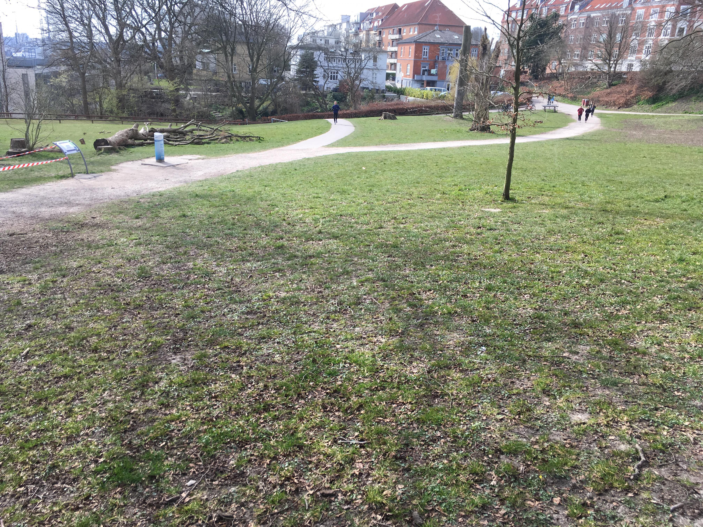
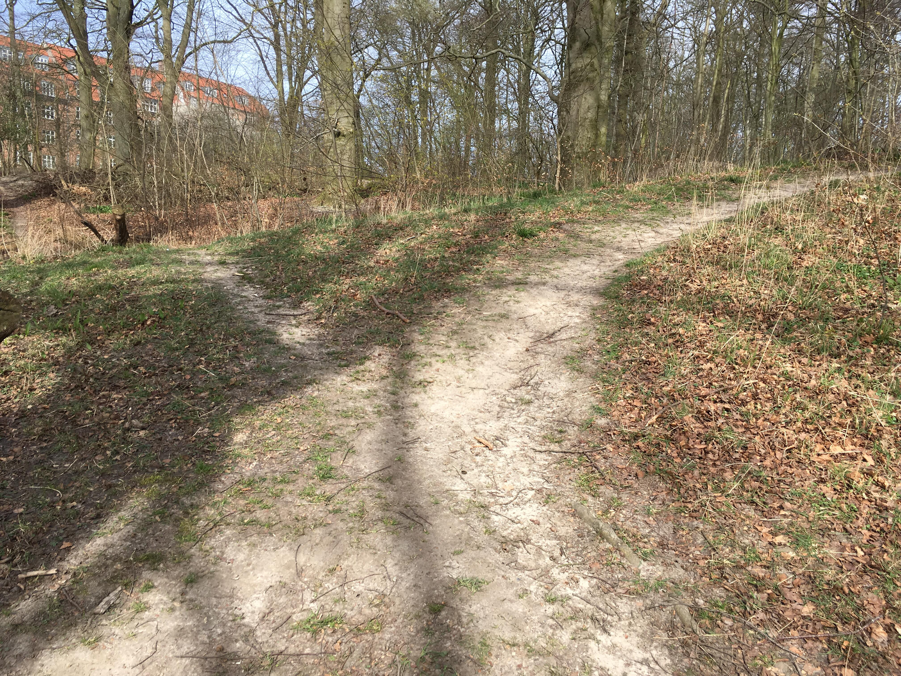

Udvidet øvelser
 Vores træningsprogram i artikel 2 henvender sig til nybegyndere men skulle man have lyst til at prøve kræfter
med mere avancerede øvelser så se under vores links på siden, hvor vi henviser til dette.
En anden måde at udvide sin træning på kunne være at løbe på stranden.
Sandet er en helt naturlig udfordring, da man ikke har den samme fremdrift. Søger man andre omgivelser
kan en tung taske på ryggen i skov eller bakkede terræn være lige noget for dig.
Sandet er en helt naturlig udfordring, da man ikke har den samme fremdrift. Søger man andre omgivelser
kan en tung taske på ryggen i skov eller bakkede terræn være lige noget for dig.
Det er altid nemmere at tage ned i det lokale fitnesscenter hvor vægte og maskiner står klar,
men hvis man forstår og udnytte et træningsstativ kan man få en lige så god og varieret træning.
Brug dine omgivelser, det koster ikke noget.